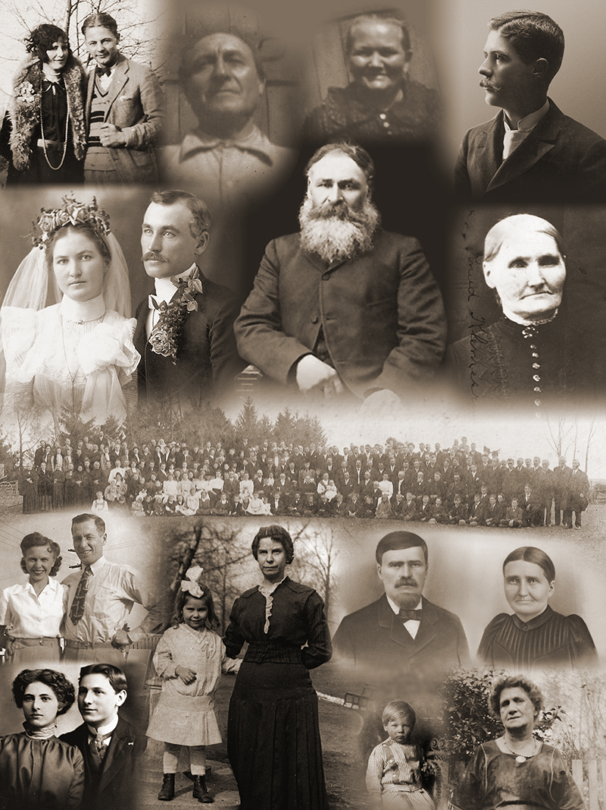

| GREAT-GREAT-GRANDPARENT SURNAMES | INFORMATION |
| Klemesrud, Grøv, Norby, Jubraaten |
Klemmetsrud website
(updated 9/9/24) Nordby webpage (updated 9/7/24) |
| Moles, Brady, McCormick, Lipe | McFarland.pdf (updated 10/30/21) |
| Stolle, Bethk, Boos, Beckman | Stolle.pdf (updated 8/26/18), Boos.pdf (updated 7/30/13) |
| Wetzel, Haise, Fornoff, Jacoby | Wetzel.pdf (updated 10/24/13) |
|
Nationalities & DNA Ethnicity
Estimate
(updated 5/23/22) |
|

| This montage of
ancestors includes all 4 grandparents, 6 of 8 great-grandparents,
and 7 of 16 great-great-grandparents. TOP ROW: Margaret
Wetzel-Stolle, Roy Stolle, Diedrich Stolle, Fredericka Bethk-Stolle,
John Louis Wetzel. 2nd ROW: Elizabeth Norby-Klemesrud, Martin
Klemesrud, Knud Klemesrud, Liv Grøv-Klemesrud. 3rd ROW: everyone
that came to Knud & Liv's 50th Wedding Anniversary in 1908. 4th ROW:
Lela McFarland-Klemesrud, Hiram Clifford Klemesrud, Margaret
Wetzel-Stolle, Anna Lillie Fornoff-Wetzel, Halstein Norby, Taran Jubraaten-Norby. BOTTOM ROW: Effie Boos-Stolle,
Frederick Stolle, Roy Stolle, Effie Beckman-Boos. The background graphic not only has the 16 great-great-grandparent names in a crossword format, it connects to itself and repeats indefinitely (tiled). The faint images behind the names are from real pictures of family significance: the silver chalice passed down from my 5th great-grandparents of the 1700s; the Adler, the ship that Knud & Liv left Norway on; the Viking axe-head and sword found in a grave at in Luster near where my 8th great-grandfather lived in the 1600s; and the tea kettle my German great-great-grandfather, Diedrich Stolle, a sea captain, brought to Chicago from Norway. |
|
PRONUNCIATION |
| Klemmetsrud, Grøv, Nordby, & Jubraaten:
Norwegian Klemmetsrud: Hedalen Dialect Stolle, Bethk, Boos, Lipe, Jacoby: German Stolle, Jacoby: English Moles, Brady, McCormick, Wetzel, Fornoff, Beckman, and Haise are pronounced just as they appear.
Additional Norwegian Names:
Bøen |
Bøhn |
Ildjarnstadhaugen* |